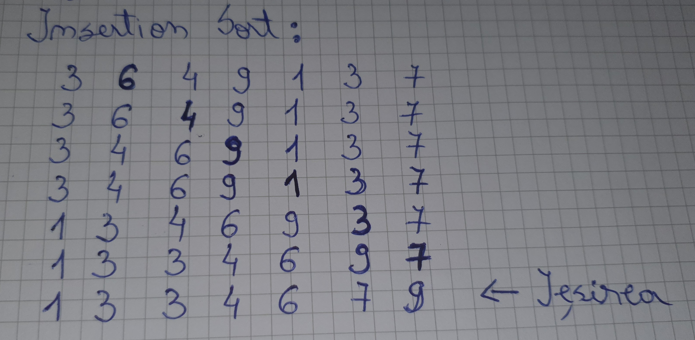
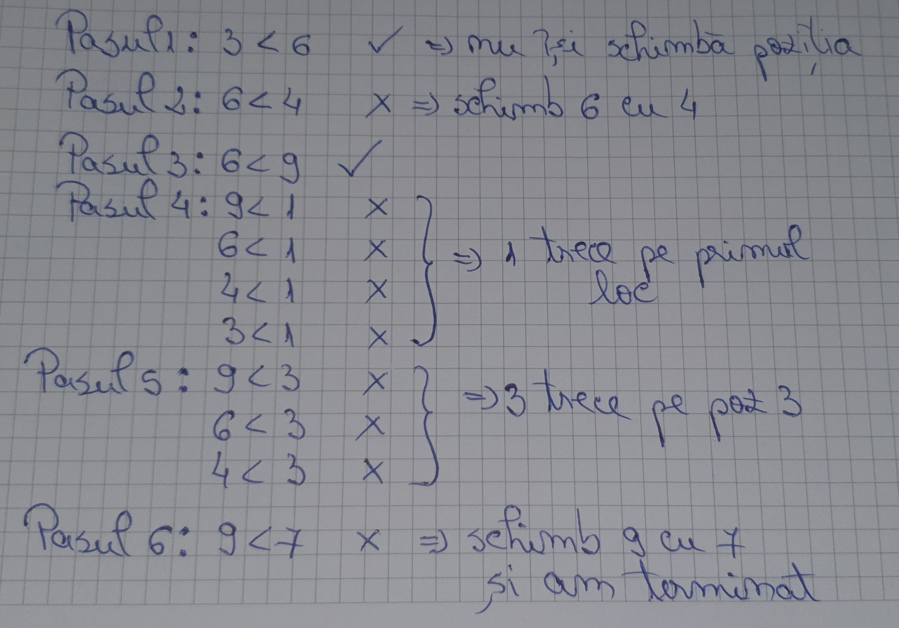

Exercitii
Exercitiul 1: Cu ajutorul explicatiilor de la exemplul 2, realizati un videoclip care sa ilustreze algoritmul insertion sort. Va puteti folosi de 5 carti de joc, ordinea acestora este la alegerea dumneavostra.
Exercitiul 2: Se da urmatoarea matrice de numere
[3 6 4 9 1 3 7]. Ordonati pe foaie matricea in ordine crescatoare si aratati toti pasii astfel incat iesirea
sa fie urmatoarea: [1 3 3 4 6 7 9]
 
Exercitiul 3: Modificati implementarea algoritmului insertion sort in Javascript astfel incat matricea [12, 11, 13, 5, 6] sa fie ordonata descrescator.
// Functia pentru sortarea matricei
function insertionSort(arr, n) {
let i, key, j;
for (i = 1; i < n; i++) {
key = arr[i];
j = i - 1;
/* Mutam elementele de arr[0..i-1], care
sunt mai mari decat variabila key,
cu o pozitie inaintea pozitiei lor curente*/
while (j >= 0 && arr[j] < key) {
arr[j + 1] = arr[j];
j = j - 1;
}
arr[j + 1] = key;
}
return arr;
}